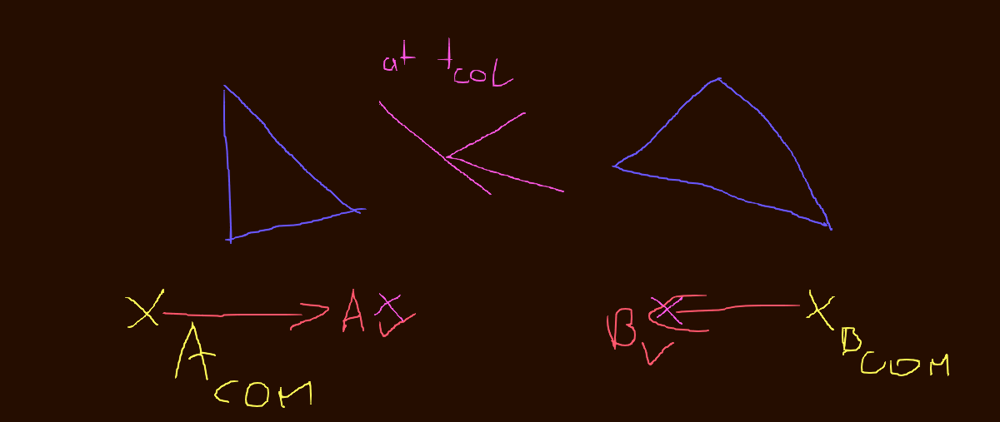
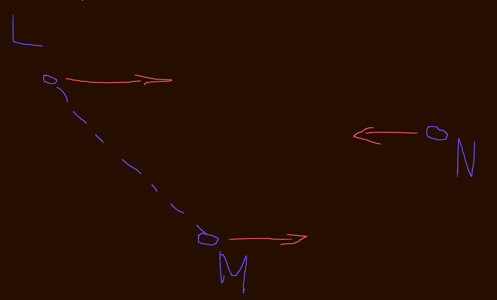
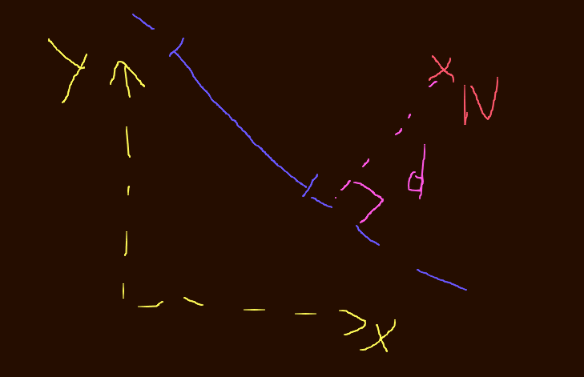
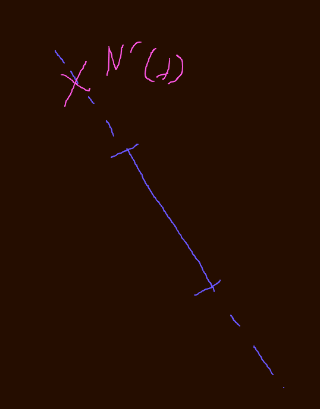

Continous Collision Detection Part1 1: Translations in 2D
The Problem
Resolve collisions between two moving Objects such that
- There are no overlaps between objects at any point
- Corollary: There is no tunneling if two objects that should collide move too fast
- Return a collision time for when the earliest collision is happening
- Return collision points for both shapes
for Collision Meshes made up of Triangles.
Translational movement in 2D
Given
- Center Of Mass
- Velocity
- A triangle (A,B,C) given in Counter Clock wise order
find the first intersection time t, if there is an intersection.

In the above picture Object A is on the left and moving to the
right, and object B is on the right and moving towards the left.
The blue triangles above the Center of Masses are the respective
collision shapes.
The purple lines represent the colliding lines at time t col.
How do we get the collision time?
Continous Line Point intersection test
Let's consider a simpler example,
just a line and a point moving relative to each other.

The line is defined by L,M and the point is N.
L,M are moving towards the right with Avel, and N is moving towards the left with Bvel.
The first insight is that for the point to collide with the line-segment
defined by L,M
it has to be on the line defined by the two points.

This means that the distance d above needs to be 0.
What is and can we find its roots?
Given the line equation, which tells us when a point is on the line
replace with the values derived from the points L and M.
Where a and b are the x,y compoenents of the lines normal vector.
Then c is given by .
Where M',L',N' are depending on t:
Now solving for T is possible:
The Terms subtracting L from M folds down
Condense notation
We arrive at the linear equation of:
Solving for t is now easy.
If 0 <= t there will be an actual collision in the future, but
with the plane.

At this time t, the point N will be at N'(t).
For the the collision to be actually valid, the point needs to be on the line segment of L'M'.
So